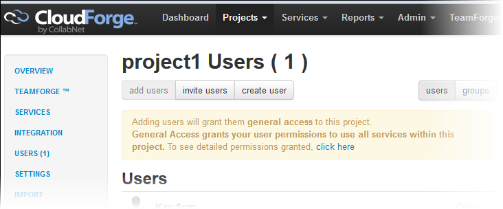

Before your team can start work on a project, you need to add them as project
users.
Adding a user to a project is done via the CloudForge web interface.
In the CollabNet Sites view, right-click a project and select
Open in browser.
Or click Add Users in the
Dashboard's CloudForge
tab.
The project is opened in the web browser.
Select
Users in the left panel and add your team members to
the project.

Adding them as users will grant them general access to all services within the
project. To control project access, you can define roles with specific permissions and
assign them as appropriate.